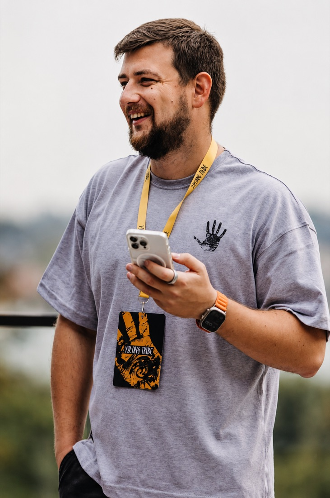

Не лекции про будущее: нахожу в ваших процессах 2–3 места, где ИИ даст измеримый эффект, и вместе с командой собираю пилот. 12+ лет в IT — от QA до Deputy COO: понимаю процессы и команды изнутри. Not lectures about the future: I find 2–3 places in your processes where AI delivers a measurable effect, and build a pilot together with your team. 12+ years in IT, from QA to Deputy COO: I understand processes and teams from the inside.

Кто-то щупает ChatGPT, кто-то нет — в командный результат это не складывается. Я нахожу 2–3 процесса с измеримым эффектом, подбираю безопасные инструменты и собираю с командой пилот. → На выходе понятно, что масштабировать, — и команда продолжает без тренера. One person pokes at ChatGPT, another doesn't — and it never adds up to a team result. I find 2–3 processes with a measurable effect, pick safe tools and build a pilot with your team. → The outcome: you know what's worth scaling — and the team keeps going without a trainer.
Вход — AI-аудит: находим процессы, где ИИ окупится. Флагман — корпоративные воркшопы, вокруг которых достраивается всё остальное.The entry point is an AI audit: we find the processes where AI pays off. The flagship is corporate workshops, with everything else built around them.
Точка входа: интервью и анкеты → 2–3 процесса, где ИИ даст измеримый эффект, безопасные инструменты под них и роадмап пилота.The entry point: interviews and surveys → 2–3 processes where AI delivers a measurable effect, safe tools for them and a pilot roadmap.
Серия практикумов по уровням Light / Medium / Advanced. Формат «делай вместе со мной» — на реальных задачах вашей команды.A series of hands-on sessions by level: Light / Medium / Advanced. A “do it with me” format — on your team's real tasks.
Команды автоматизируют один сквозной процесс end-to-end: выход одной команды — вход следующей. Реальный прогон, а не демо.Teams automate one end-to-end process: the output of one team becomes the input of the next. A real run, not a demo.
Выращиваем внутренних чемпионов и поддерживаем команду после обучения — чтобы навык не угас, а рос.We grow internal champions and support the team after training — so the skill doesn't fade but keeps growing.
Снимаем реальные задачи, уровень команды и внутренний словарь.We capture real tasks, the team's level and its internal vocabulary.
Короткий тест: уровень, инструменты, ожидания, задачи на автоматизацию.A short test: level, tools, expectations, tasks to automate.
Под направления и уровни. Структуру согласуем с вами до старта.By track and level. We agree the structure with you before we start.
Практикумы по уровням, hands-on — в основном практика, немного теории.Hands-on sessions by level — mostly practice, a little theory.
Прогон на реальном сквозном процессе, а не на учебном примере.A run on a real end-to-end process, not a toy example.
Команды показывают, что собрали, — и забирают идеи друг у друга.Teams present what they built — and borrow ideas from each other.
12+ лет в IT — прошёл путь от QA до Deputy COO. Не «просто тренер»: за спиной операционка, поэтому понимаю, как на самом деле устроены процессы и люди. 12+ years in IT — I went from QA to Deputy COO. Not “just a trainer”: I have an operations background, so I understand how processes and people actually work.
Автор Telegram-канала «Шаг за шагом в ИИ» с живыми агентными кейсами. Фильтр материала простой: беру только то, что можно объяснить за 2 минуты без единой строчки кода. I write the Telegram channel “Step by step into AI” with live, agentic cases. My filter is simple: I only teach what I can explain in two minutes, without a single line of code.
За 30 минут прикинем, в каких процессах ИИ даст измеримый эффект — и стоит ли за это браться. Без презентаций и продажи. In 30 minutes we'll map where AI can deliver a measurable effect in your processes — and whether it's worth doing. No slide decks, no pitch.